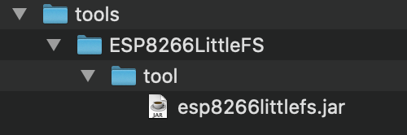

Installing the prerequisite software and getting your cloud account setup¶
Lab Objectives¶
This Lab will ensure you have all the resources and software needed to complete the lab installed. You should follow the instructions for your OS and complete all sections of the setup before moving forward with the Lab.
ESP8266 development¶
To be able to complete the workshop you need to purchase the required hardware and install the required software to your laptop or workstation. You also need an active IBM Cloud account and a suitable WiFi environment:
WiFi¶
The ESP8266 can connect to a 2.4GHz network supporting 802.11 b/g/n. The ESP8266 will not work with 5GHz frequencies (802.11 ac).
As there is no ability to launch a browser on the ESP8266, so you cannot work with WiFi networks needing a browser to be able to enter credentials, which is a mechanism often used in public spaces, such as hotels.
The workshop does not support advanced authentication, such as using LDAP or certificates to authenticate to the network. You should have a network that uses an access token/password, such as WPA/WPA2 - this is what most home WiFi access points provide.
Many corporate networks are difficult to connect IoT devices to, as they can be tightly secured, often requiring certificates to be installed.
If a suitable network is not available then smart Phone hotspots can be used to provide connectivity. The workshop does not require large amounts of data for the ESP8266, so is suitable for using a phone hotspot.
There are no incoming ports needed for the workshop, but the ESP8266 needs to be able to connect via MQTT protocol over TCP to ports 1883 and 8883. The workshop also need web access over TCP ports 80 and 443. The final port that is needed is for Network Time Protocol (NTP), which uses an outbound UDP connection on port 123.
Purchasing the required Hardware¶
You need to purchase the following hardware to work through the workshop. The workshop instructions uses the DHT11 temperature and humidity sensor. This can be replaced with the DHT22 sensor, which has the same pinout, but offers a more accurate sensor. DHT11 is accurate within 2C, whilst the DHT22 is accurate to within 0.5C.
- ESP8266, (search for NodeMCU ESP8266 v3 or v2)
- NeoPixel RGB LED (or any other chainable RGB/RGBW LED based on ws2812b or sk6812 chips ), such as this from Adafruit (Search for Neopixel 8mm or 5mm - often sold in packs of 5)
- DHT11 Temperature / Humidity Sensor (search for DHT11 or DHT22)
- 6 x Female to Female jumper wires (search for dupont cable f2f or f-f - usually sold in packs of 40 cables)
- MicroUSB cable (Please ensure it is a data cable, not just a power cable)
Installing the required software¶
The following instructions have been tested against Linux (Ubuntu 18.04LTS and Fedora 27), MacOS (High Sierra) and Windows 10. If you are using a different OS then you may need to adapt the instructions to match your installed OS.
You may need admin access to your workstation to be able to install the software and drivers.
Step 1 - Install the required drivers¶
If you are attending an IBM face-to-face workshop, then the boards you will be using are branded LoLin and use the CH340 USB to serial chip.
You may need a driver for your OS to be able to communicate with the USB to serial CH340G chip used in the ESP8266 modules. Do not plugin the device until you have installed the driver on Windows and Mac. The drivers can be downloaded from :
- MacOS (This is the manufacturers web site, in Chinese, for the USB driver chip on the LoLin NodeNCU board - use Google Chrome to translate, or just click the download link to access the macOS driver). After installing goto System Preferences -> Security and Privacy to allow the driver to be loaded.
-
Alternatively if you use homebrew you can install the driver using command
brew cask install homebrew/cask-drivers/wch-ch34x-usb-serial-driver
Select the appropriate one for your OS, download it, unzip it and install it.
Note
Linux should not need a driver installing, as it should already be installed.
If you have your own ESP8266 module then it may not use the CH340G USB to serial chip. Another very popular chip is the CP2102, which is used in Amica branded boards. The drivers for this chip can be found here.
If you are a Mac user and use homebrew then the driver can be installed using command:
brew cask install homebrew/cask-drivers/silicon-labs-vcp-driver
On Mac after the install you may need to approve the driver. From the Apple menu, go to System Preferences -> Security and Privacy to allow the driver to be loaded.
When the driver is installed and the NodeMCU module is connected you can test if the driver is working:
- Linux : You will see a device appear from the command
ls /dev/ttyUSB* - MacOS : You will see an additional device appear from output of command
ls /dev/tty.* - Windows : You will see an additional COM port in the Ports section of the Device Manager.
Step 2 - Install the Arduino IDE¶
The workshop will use the Arduino IDE to create applications for the ESP8266 module. You need to have an up to date version of the Arduino IDE, available from here. Select the version for your OS then download and install it:
-
Linux : Your linux distro may have Arduino available in the software package manager catalog, if not you can manually install it:
-
unarchive it, move it to /opt or /usr/local (
sudo mv arduino-1.8.7 /opt) then run/opt/arduino-1.8.7/install.shNote
you will need to change the version number in the command above if you downloaded a version newer than 1.8.7
-
Some Linux distros you may need to add your user to the tty and dialout groups to be able to use the connection to the device. You can do this using command
sudo usermod -a -G tty,dialout $USERyou will have to log out and log in again to get the added permissions
-
-
MacOS : simply drag Arduino app into Applications folder after unzipping)
- Windows : run the downloaded installer application
Step 3 - Install the ESP8266 Plugin for the Arduino IDE¶
Out of the box the Arduino IDE does not support ESP8266 development. You need to add a plugin to add support. Launch the Arduino IDE then open up the preferences panel for the Arduino IDE:
- Linux : File -> Preferences
- MacOS : Arduino -> Preferences
- Windows : File -> Preferences
Paste in the URL for the ESP plugin to the Additional Board Managers URLs field: http://arduino.esp8266.com/stable/package_esp8266com_index.json
Select OK to close the preferences dialog.
Select Tools -> Board: -> Board Manager... from the menu, then enter ESP in the search box. This should reveal an item esp8266 by ESP8266 community. Click inside the esp8266 box then press install to install the latest plugin. Once installed close the board manager.
Step 4 - Install the filesystem upload tool for ESP8266¶
The ESP8266 has flash memory that can hold a filesystem. There is a plugin for Arduino that allows you to generate a populated filesystem and upload it to the ESP8266 board. The plugin can be downloaded from here. You need to create a tools directory within the sketch directory then extract the content there.

Note
you can find the sketch directory location from the preferences panel of the Arduino IDE
The default location of the sketch directory is:
- Linux - /home/< user name >/Arduino/tools/ESP8266LittleFS
- MacOS - /Users/< user name >/Documents/Arduino/tools/ESP8266LittleFS
- Windows - C:\Users\< user name >\Documents\Arduino\tools\ESP8266LittleFS
Step 5 - SSL utility to work with certificates
During the workshop you will be generating your own self-signed certificates, so need the OpenSSL tooling installed. Follow the instructions for your OS below:
- Linux : openssl is installed as part of the OS for most distros, so should have nothing to do here. If it is not installed then most distros have an openssl package which can be installed using the distro package installer tool.
- MacOS : openssl is installed as part of the OS, so nothing to do here.
- Windows : There are 2 options for installing OpenSSL on Windows. You can install a binary distribution to run on Windows or you can enable the Windows Subsystem for Linux, which provides a Linux environment within Windows:
-
Windows Binary: The openssl official website only provides source. You can choose to build the binaries from source, but there are links to sites hosting prebuilt binaries, such as this site for 32 and 64 bit Windows. You want to select one of the 1.1.x versions. You only need light version for this workshop, but you can choose the full version if you want the additional developer resources. When installing, the default install options are OK. The standard install does NOT add the openssl executable to the system PATH, so you will need to specify the full path of the binary when entering commands, unless you add it to the PATH, e.g.
c:\OpenSSL-Win64\bin\openssl.exe.Note
this method will not provide the xxd binary, but you don't need it for this workshop. If you get an error saying MSVCR120.dll is missing, then you can download the Visual Studio 2013 redistibutable package here
-
Windows Subsystem for Linux: This option installs a Linux distribution within Windows, so you get access to all the Linux utilities and can install additional packages, such as openssl. To enable Linux Services for windows follow the instructions here. Select Debian as the Linux distribution, then when it is installed launch Debian then run the following commands at the Linux command prompt:
sudo apt-get update ; sudo apt-get upgrade sudo apt-get install openssl
Ensure you have a working IBM Cloud account¶
The workshop will use services hosted on the IBM Cloud, so you need to ensure you have a working account. If not you can sign up for free, without needing to input any credit card details, by following this link. The workshop can be completed using the free, lite account.